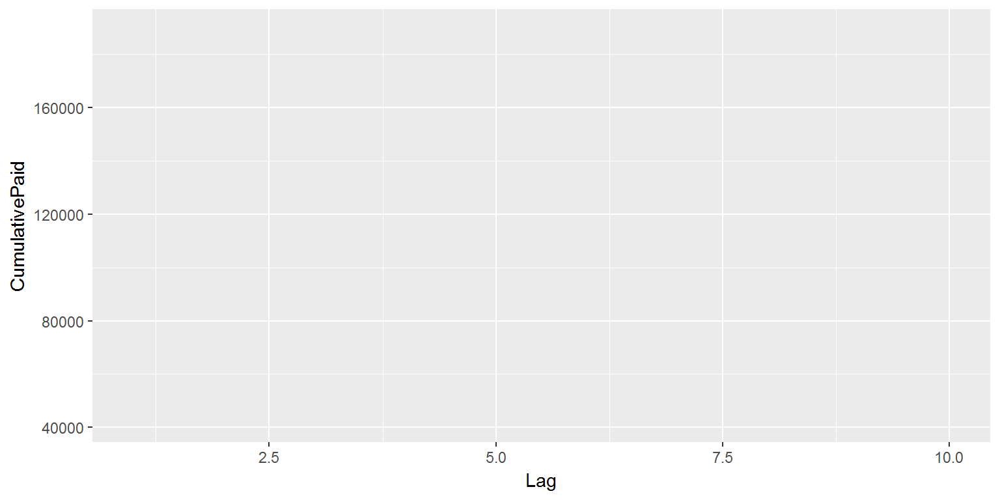
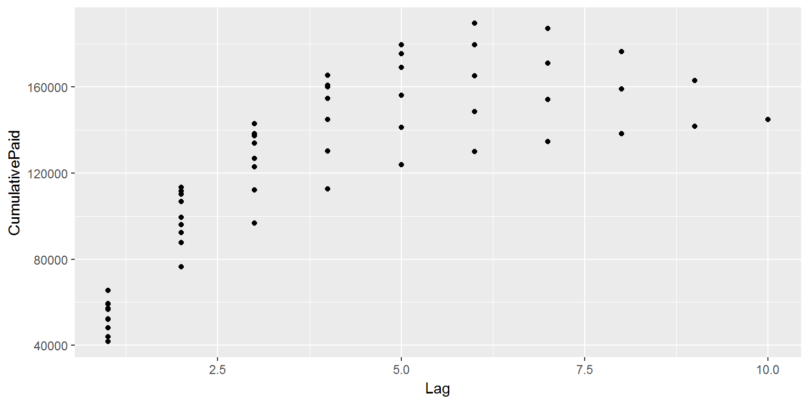
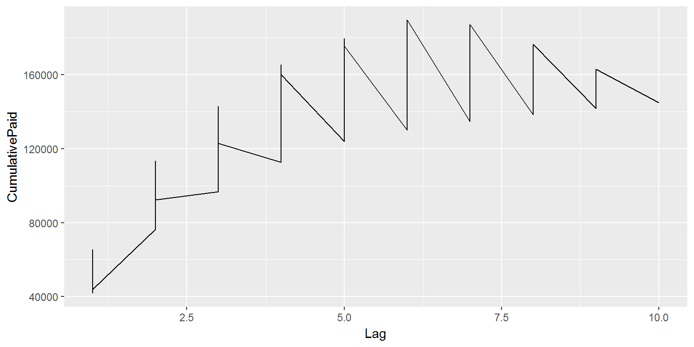
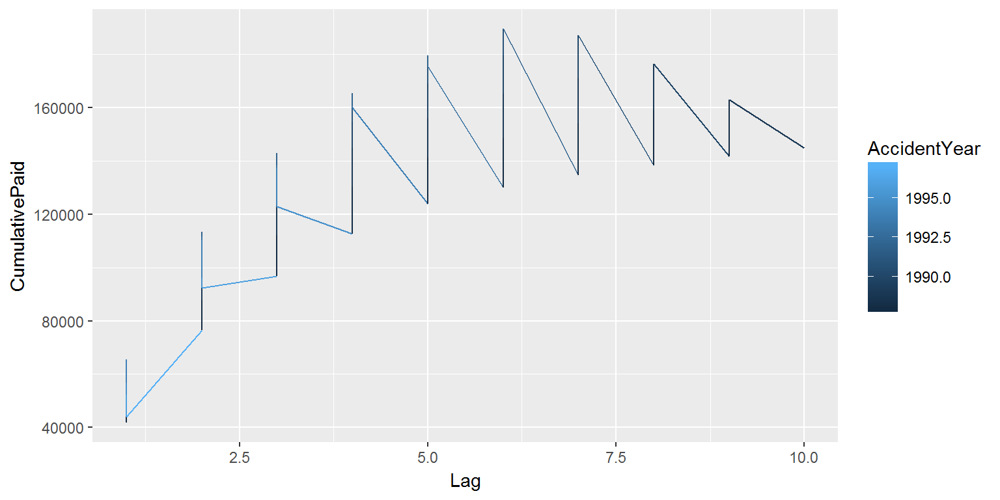
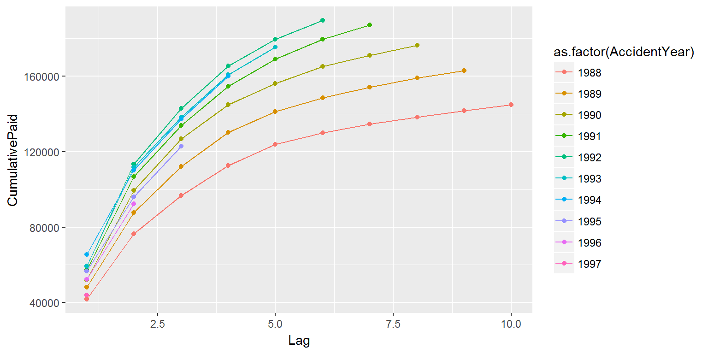

data(MultiTri)library(raw)
data(MultiTri)thirdRow <- MultiTri[1:2]thirdRow <- MultiTri[1:2, ]devYear1997 <- MultiTri[DevelopmentYear = 1997, ]
## Error in `[.tbl_df`(MultiTri, DevelopmentYear = 1997, ): unused argument (DevelopmentYear = 1997)devYear1997 <- MultiTri[DevelopmentYear == 1997, ]
## Error in lapply(.x, .f, ...): object 'DevelopmentYear' not founddevYear1997 <- MultiTri[MultiTri$DevelopmentYear == 1997, ]See script window
dfStuff <- MultiTri %>%
select(Company)dfStuff <- MultiTri %>%
summarise(TotalPremium <- sum(NetEP))dfStuff <- MultiTri %>%
summarise(TotalPremium = sum(NetEP))dfLosses <- MultiTri %>%
filter(Company == "New Jersey Manufacturers Grp"
, AccidentYear + Lag - 1 <= 1997
, Line == "Workers Comp") %>%
select(-Line, -Company, -GroupCode, -Reserve1997, -Single, -DirectEP, -CededEP) %>%
arrange(AccidentYear, DevelopmentYear) %>%
group_by(AccidentYear) %>%
mutate(PriorIncurred = dplyr::lag(CumulativeIncurred)
, PriorPaid = dplyr::lag(CumulativePaid)
, IncrementalPaid = CumulativePaid - PriorPaid
, IncrementalIncurred = CumulativeIncurred - PriorIncurred)library(ggplot2)
plt <- ggplot(dfLosses, aes(Lag, CumulativePaid))
plt
plt <- ggplot(dfLosses, aes(Lag, CumulativePaid)) + geom_point()
plt
plt <- ggplot(dfLosses, aes(Lag, CumulativePaid)) + geom_line()
plt
plt <- ggplot(dfLosses, aes(Lag, CumulativePaid, color = AccidentYear)) + geom_line()
plt
plt <- ggplot(dfLosses, aes(Lag, CumulativePaid, color = as.factor(AccidentYear))) + geom_line() + geom_point()
plt
dfLag2 <- dfLosses %>%
filter(Lag = 2)
## Error: `Lag` (`Lag = 2`) must not be named, do you need `==`?dfLag2 <- dfLosses %>%
filter(Lag == 2)